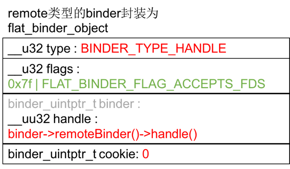
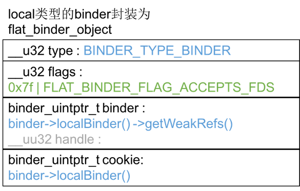

Binder学习笔记（五）—— Parcel是怎么打包的？
前文中曾经遇到过Parcel，从命名上知道他负责数据打包。在checkService的请求/响应体系中，Parcel只打包了基本数据类型，如Int32、String16……后面还要用于打包抽象数据类型flat_binder_object，这会稍微复杂一些，因此有必要拿出来单独研究。我们从Parcel::writeInterfaceToken(…)追起，它的层层调用关系如下，这些函数都在frameworks/native/libs/binder/Parcel.cpp文件中，行数和函数名为:
582 writeInterfaceToken(…)
748 Parcel::writeInt32(int32_t val)
1149 Parcel::writeAligned(val)
所有的基本数据类型的打包最后都由writeAligned(…)实现的，其内部逻辑也非常简单，
frameworks/native/libs/binder/Parcel.cpp:11491
2
3
4
5
6
7
8
9
10
11
12
13
14template<class T>
status_t Parcel::writeAligned(T val) {
COMPILE_TIME_ASSERT_FUNCTION_SCOPE(PAD_SIZE_UNSAFE(sizeof(T)) == sizeof(T));
if ((mDataPos+sizeof(val)) <= mDataCapacity) {
restart_write:
*reinterpret_cast<T*>(mData+mDataPos) = val; // 将val追加到mData
return finishWrite(sizeof(val));
}
status_t err = growData(sizeof(val)); // 如果mData空间不够，则先扩容
if (err == NO_ERROR) goto restart_write;
return err;
}
mData是一块内存栈，writeXXX则把数据写入栈，如果mData空间不够，先给mData扩容，并把原先的数据搬到新的空间，再把新数据写入栈。
Parcel::writeStrongBinder(…)的逻辑更复杂一些，它的调用关系如下：
frameworks/native/libs/binder/Parcel.cpp
872 Parcel::writeStrongBinder(const sp
& val)
205 Parcel::flatten_binder(const sp& /proc/, const sp & binder =val, Parcel* out=this)
来看flatten_binder(…)，frameworks/native/libs/binder/Parcel.cpp:2051
2
3
4
5
6
7
8
9
10
11
12
13
14
15
16
17
18
19
20
21
22
23
24
25
26
27
28
29
30
31status_t flatten_binder(const sp<ProcessState>& /*proc*/,
const sp<IBinder>& binder, Parcel* out)
{
flat_binder_object obj;
obj.flags = 0x7f | FLAT_BINDER_FLAG_ACCEPTS_FDS;
if (binder != NULL) {
IBinder *local = binder->localBinder();
if (!local) { // remote类型的binder封装逻辑
BpBinder *proxy = binder->remoteBinder();
if (proxy == NULL) {
ALOGE("null proxy");
}
const int32_t handle = proxy ? proxy->handle() : 0;
obj.type = BINDER_TYPE_HANDLE;
obj.binder = 0; /* Don't pass uninitialized stack data to a remote process */
obj.handle = handle;
obj.cookie = 0;
} else { // local类型的binder封装逻辑
obj.type = BINDER_TYPE_BINDER;
obj.binder = reinterpret_cast<uintptr_t>(local->getWeakRefs());
obj.cookie = reinterpret_cast<uintptr_t>(local);
}
} else {
obj.type = BINDER_TYPE_BINDER;
obj.binder = 0;
obj.cookie = 0;
}
return finish_flatten_binder(binder, obj, out);
}
它根据传入binder的类型做不同的数据封装，在frameworks/native/include/binder/IBinder.h:139，可以看到IBinder声明了两个虚函数：1
2
3
4
5
6
7
8class IBinder : public virtual RefBase
{
public:
……
virtual BBinder* localBinder();
virtual BpBinder* remoteBinder();
……
};
并在frameworks/native/libs/binder/Binder.cpp:47定义了默认实现：1
2
3
4
5
6
7
8
9BBinder* IBinder::localBinder()
{
return NULL;
}
BpBinder* IBinder::remoteBinder()
{
return NULL;
}
flat_binder_object这个数据结构在《Binder学习笔记（四）—— ServiceManager如何响应checkService请求》研究ServiceManager如何组织reply数据时遇到过，它定义在external/kernel-headers/original/uapi/linux/binder.h:57。对于不同的binder封装成的数据示意图如下：


然后flatten_binder(…)调用finish_flatten_binder(…)，frameworks/native/libs/binder/Parcel.cpp:1991
2
3
4
5inline static status_t finish_flatten_binder(
const sp<IBinder>& /*binder*/, const flat_binder_object& flat, Parcel* out)
{
return out->writeObject(flat, false);
}
继续调用writeObject(…)，frameworks/native/libs/binder/Parcel.cpp:10351
2
3
4
5
6
7
8
9
10
11
12
13
14
15
16
17
18
19
20status_t Parcel::writeObject(const flat_binder_object& val, bool nullMetaData)
{
const bool enoughData = (mDataPos+sizeof(val)) <= mDataCapacity;
const bool enoughObjects = mObjectsSize < mObjectsCapacity;
if (enoughData && enoughObjects) {
restart_write:
// 如果空间足够，他把前面组装的flat_binder_object实体追加到mData里
*reinterpret_cast<flat_binder_object*>(mData+mDataPos) = val;
……
if (nullMetaData || val.binder != 0) {
// mObjects记录每次向mData追加的flat_binder_object的偏移位置
mObjects[mObjectsSize] = mDataPos;
acquire_object(ProcessState::self(), val, this, &mOpenAshmemSize);
mObjectsSize++;
}
return finishWrite(sizeof(flat_binder_object));
}
……
}
总结一下：Parcel的数据区域分两个部分：mData和mObjects，所有的数据不管是基础数据类型还是对象实体，全都追加到mData里，mObjects是一个偏移量数组，记录所有存放在mData中的flat_binder_object实体的偏移量。Parcel的数据模型如下：